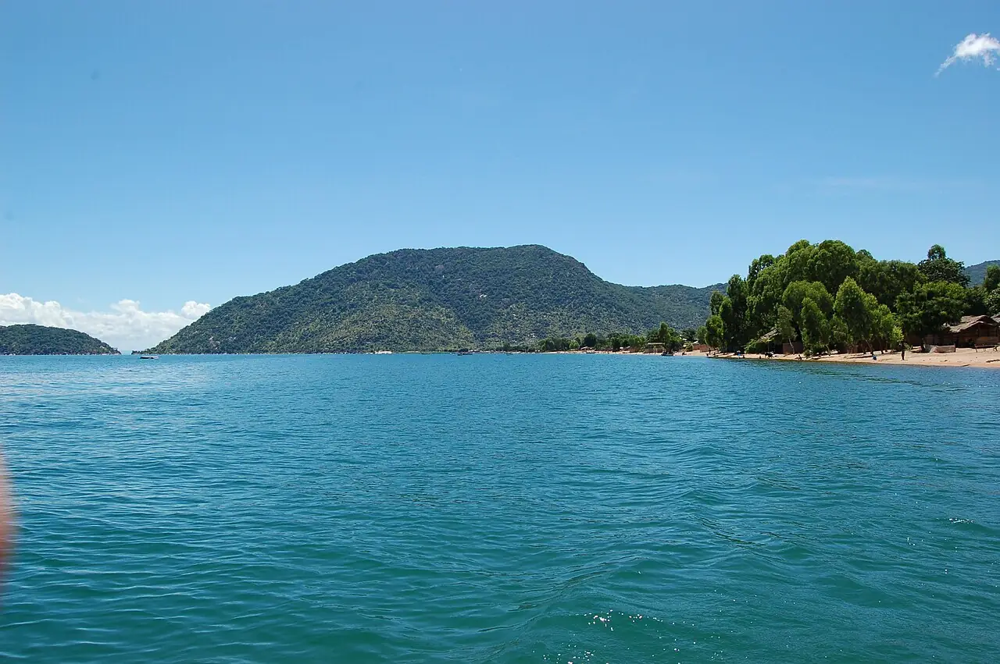

Cape Maclear — Lac Malawi
Mangochi, Malawi · kayak, snorkeling, baignade

Village de Chembe, dans le parc national du lac Malawi, inscrit au patrimoine mondial de l’UNESCO. L’eau douce et claire abrite des centaines d’espèces de cichlidés colorés, à observer en kayak ou au masque autour des îlots.
- Lieu
- Mangochi, Malawi
- Niveau
- Débutant
- Activités
- kayak, snorkeling, baignade
- Type d'eau
- lake
- Coordonnées
- -14.02, 34.85 (position approximative du secteur)
Dangers à connaître
- Risque de bilharziose dans le lac, surtout près des berges herbeuses et des villages : consulte un médecin au retour.
- Vent qui peut lever des vagues l’après-midi sur le lac.
Le conseil d'Ocean Buddy
Pars avec un guide ou en kayak vers les rochers d’Otter Point pour le snorkeling, et renseigne-toi sur la bilharziose avant de te baigner.
Ouvrir dans Ocean Buddy Télécharger sur l'App Store
Source : Fiche Ocean Buddy · septembre 2026 · à vérifier localement.